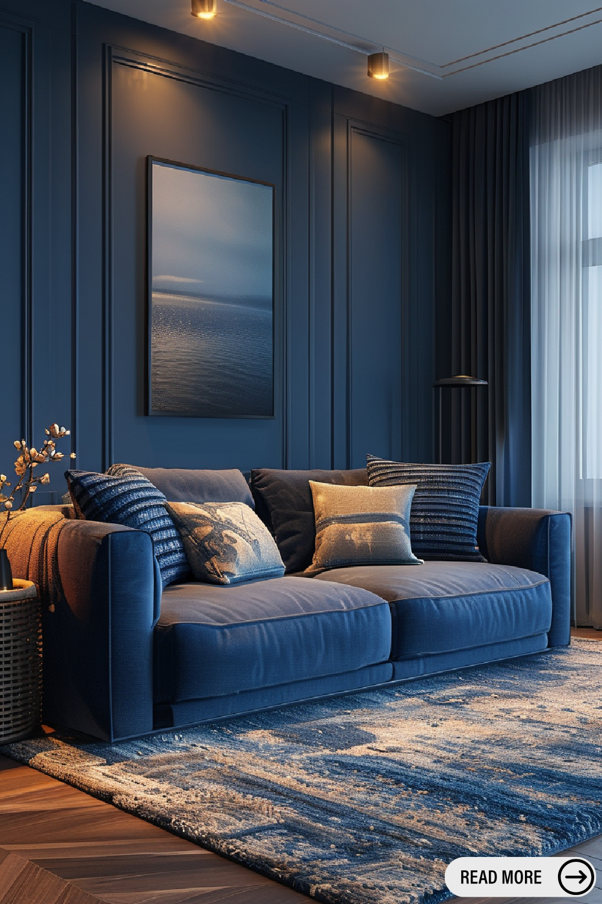
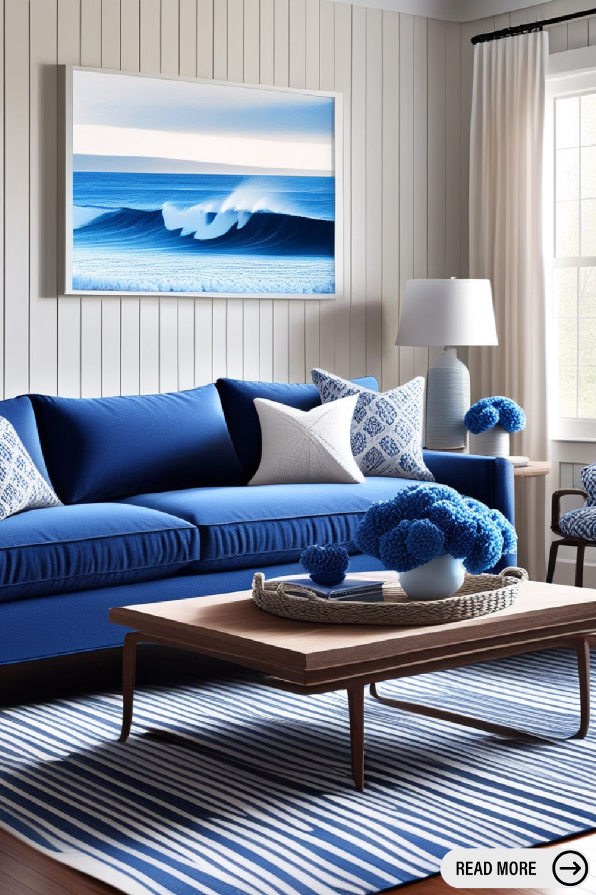
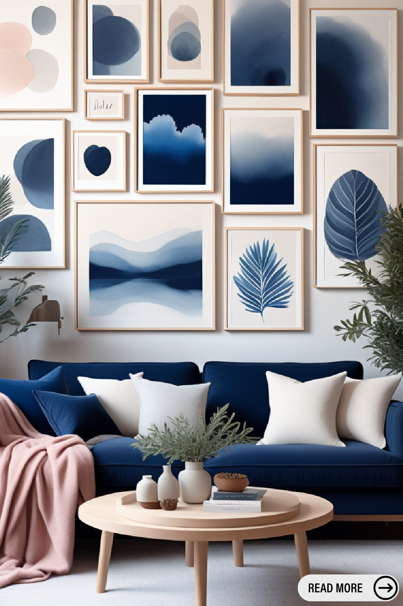
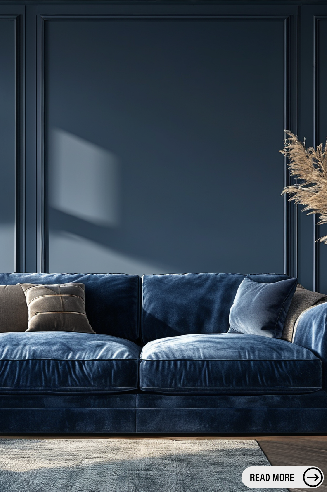

Navy blue is a timeless and sophisticated color that can transform any living room into a stylish and elegant space. Whether you prefer a modern, classic, or eclectic design, navy blue living room decor can enhance your home's ambiance while creating a cozy and inviting atmosphere. In this guide, we'll explore the best ways to incorporate navy blue into your living room and achieve a harmonious balance of style and comfort.
1. Choosing the Right Shade of Navy Blue
Navy blue comes in various shades, from deep midnight hues to softer, muted tones. The right shade for your living room depends on your desired aesthetic and the amount of natural light the space receives. Darker shades of navy create a dramatic and luxurious feel, while lighter tones offer a softer, more relaxed ambiance.
2. Navy Blue Walls: A Bold Statement
One of the most impactful ways to incorporate navy blue into your living room is by painting the walls. A navy blue accent wall can serve as a stunning focal point, while an all-over navy palette can create a cozy and intimate setting. Pair navy blue walls with contrasting colors like white, beige, or gold to prevent the space from feeling too dark.
3. Furniture and Upholstery
Investing in navy blue furniture, such as a velvet sofa or armchair, can add a touch of sophistication to your living room. If you prefer a more subtle approach, consider navy blue throw pillows, ottomans, or rugs to introduce the color without overwhelming the space. Pair navy blue furniture with neutral or metallic accents to create a balanced look.
4. Navy Blue Accessories and Decor Accents
Adding navy blue accessories is an effortless way to incorporate the color into your living room. Consider navy blue curtains, vases, artwork, or lampshades to add depth and character to the space. Decorative cushions with navy blue patterns or textures can also tie the color scheme together.
5. Complementary Color Palettes
Navy blue pairs beautifully with a variety of colors. Some popular combinations include:
- Navy Blue and White: A classic and timeless pairing that exudes elegance.
- Navy Blue and Gold: Adds a touch of luxury and sophistication.
- Navy Blue and Blush Pink: Creates a soft and modern contrast.
- Navy Blue and Grey: Offers a contemporary and sleek aesthetic.
- Navy Blue and Green: Introduces a refreshing and natural vibe.
6. Lighting Considerations
Since navy blue is a dark color, proper lighting is essential to keep the living room bright and airy. Use layered lighting, such as pendant lights, floor lamps, and wall sconces, to enhance the space. Mirrors and reflective surfaces can also help bounce light around the room, preventing it from feeling too enclosed.
7. Incorporating Navy Blue in Different Styles
- Modern: Pair navy blue with sleek furniture, minimalistic decor, and metallic accents.
- Traditional: Combine navy blue with classic furniture, rich wood tones, and ornate patterns.
- Coastal: Use navy blue with white and sandy beige tones for a relaxed, beach-inspired look.
- Bohemian: Mix navy blue with eclectic prints, woven textures, and earthy tones for a warm and inviting space.
Navy blue living room decor offers endless possibilities for creating a chic and inviting space. Whether you opt for bold navy walls, statement furniture, or subtle accessories, this versatile color can elevate your living room's aesthetics. By balancing navy blue with complementary colors, lighting, and textures, you can achieve a beautifully styled space that feels both elegant and comfortable.
   